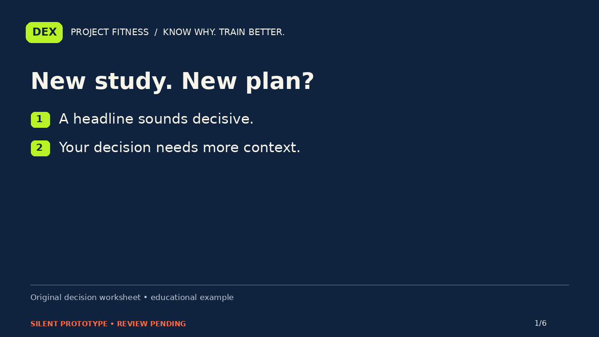
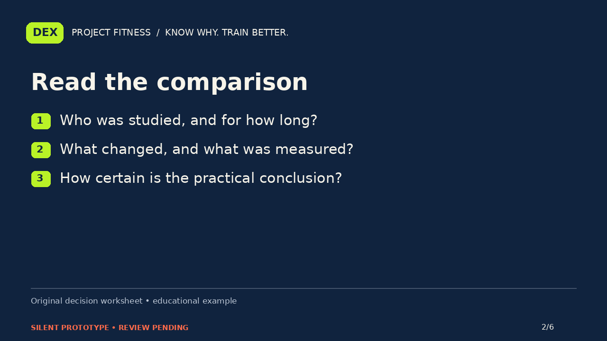
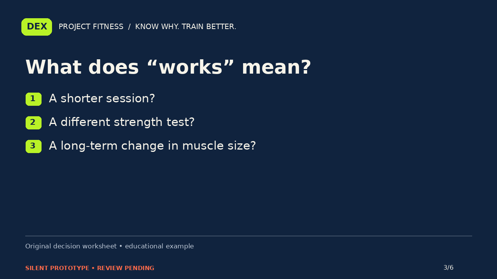
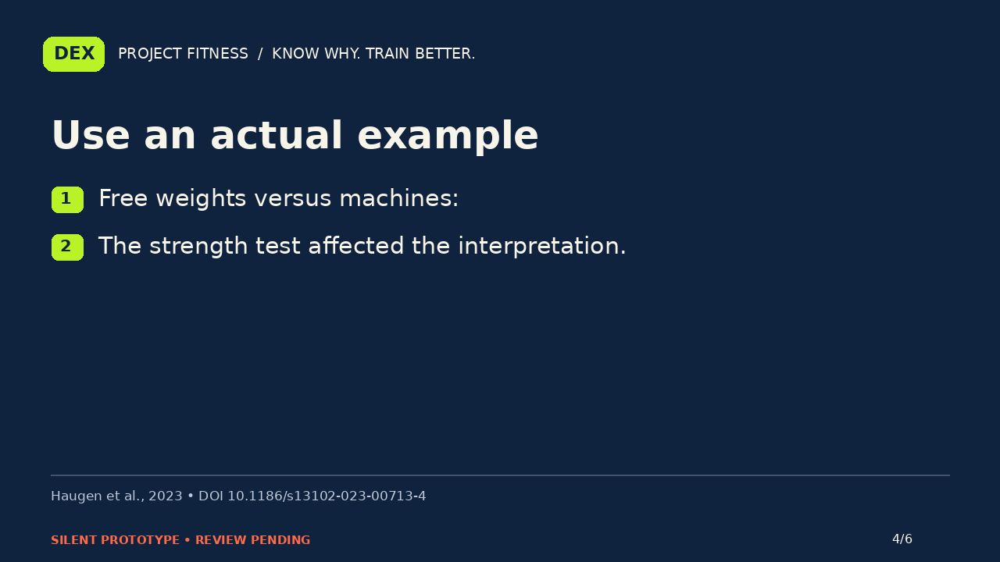
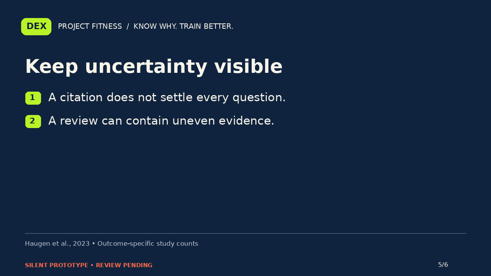
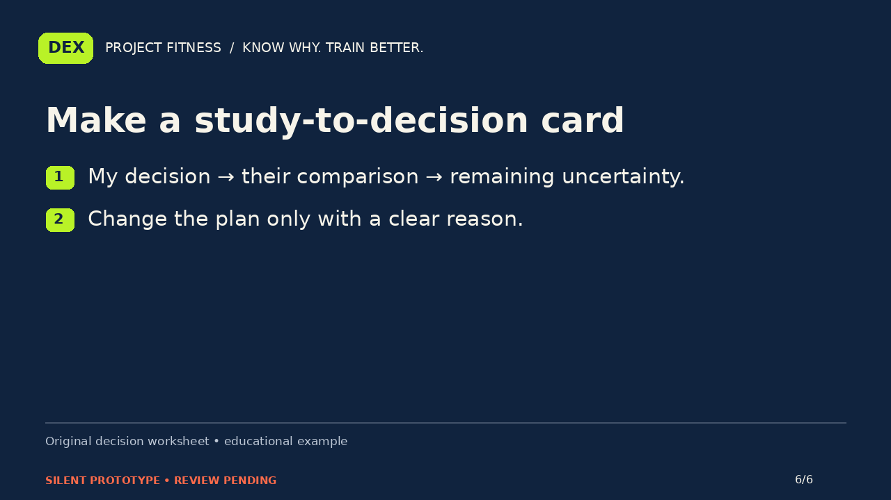

PROJECT FITNESS / P03-headlines / A
A new fitness study appears. Should your plan change?
Silent storyboard prototype. Narration and editorial review are pending.
Narration script · Draft captions

A new study appears in your feed. The headline makes your current routine sound outdated. Before you rewrite the plan, separate two questions: what did the research actually compare, and which decision in your own routine would that comparison help you understand?

Start with the population, the comparison, the outcome, and the time period. Then look for uncertainty and limitations. A result can be interesting without answering your question. Write the decision first, so you can see whether the study is relevant to it.

Consider the word works. It could mean a shorter session, a better score on one strength test, or a change in muscle size over time. Those are different outcomes. Treating them as one promise can turn a careful finding into an exaggerated recommendation.

For example, a review of free-weight and machine training found that the strength-testing task mattered to the interpretation. A broad headline about which equipment wins could miss that distinction. Reading the outcome helps you see what the result can and cannot answer.

A citation is a starting point for checking a claim. It is not proof that every sentence beside it is justified. Even within one review, the amount of evidence can differ by outcome. Keep those limits visible instead of replacing them with a confidence badge.

Use the study-to-decision card: your decision, their comparison, and the uncertainty that remains. Sometimes the useful result is a better question, or a reason to keep learning. A new headline does not have to become a new routine. Know why. Train better.